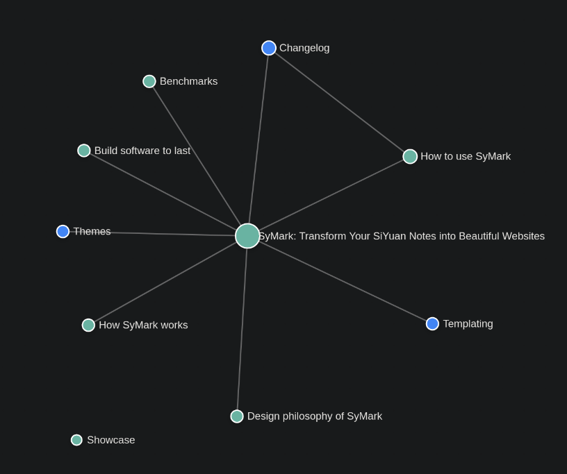

7/4/2025
Added Styles testStyles testThis page exists to display what formatting options SyMark is capable of rendering compared to SiYuan. page for testing various page styles provided by SiYuan's editor.
7/2/2025
Multi-theme support! You can now create your own ThemesThemesCurrently there's a default theme handcrafted by a human, and a theme named "dark" generated by Claude 3.7 Sonnet as an example. and select between them. To do this, run with the theme name, for example
cargo run mythemeor./symark mythemewill use the theme titledmythemeinstead ofdefault.The folder name is used as the theme title, to avoid requiring a config file.
There's a new theme called
darkwhich is for experimentation and inspiration. Depending on my available time, more themes may come soon, or later, or never, but probably later.General bug fixes and improving parity with SiYuan. Still not a single breaking change between the first release and now.
6/30/2025
Added graph support with d3.js for a nice visual way to see how topics relate to each other. Similar to Obsidian and Quartz. Clicking on one of the nodes takes you to the webpage it aligns with. The colors represent the main tag and how related it is. Here's the graph for this SiYuan notebook:

6/18/2025
Added support for OpenGraph tags; the description that shows up near some links on Signal, Discord, Twitter (X), and other social apps. The generator will try to select a paragraph that makes sense as a description and insert it for you on every page just like tooltips. I haven't tested on Discord because I don't use it, but others say it works, so ship it!

6/17/2025
Improved performance for a surreal 2ms per page!

Currently, transclusions adds about 3ms to every page that includes them. Still, this only affects pages that include transclusions (like this one) and it's not really noticible when converting notebooks with less than 10,000 notes.
6/14/2025
Added support for transclusion, aka "Embed Block". An example is below, hover over it to see a button in the top-right with a link to the original document which its contents come from.
Go to sourceMost software nowadays is built to be fragile; requiring a constant internet connection, licensing servers, and/or other things that can screw up your workflow when they break. This method of buliding software removes agency from the creator and gives control to the company or individual who created the software.
Instead of worrying about whether your content will last and your website will always be updatable, you're stuck worrying if their payment infrastructure will ever go down, or screwing around with self-hosting a shim licensing server to get the now-defunct product which you paid for working again.
More often than not, licensing servers, telemetry, and other anti-user mechanisms of extracting value from users end up being used beyond thier original purpose; turning into dystopian tools designed to keep specific groups away from software (part of export controls).
Significant bug fixes regarding Unicode and zero-width characters
Some small styling fixes
6/12/2025
Added support for internal link tooltips! (aka "popover previews"). They're incredibly useful for sharing links that reference other pagesHow to use SyMarkSyMark is easy to use, just download the binary for your platform, export your SiYuan notebook as a file and extract its contents into the folder of SyMark. but have a different display text.
1 Linked mentions: Changelog
Fixed many edge cases for unordered lists
<ul>and images within unordered lists.Updated How to use SyMarkHow to use SyMarkSyMark is easy to use, just download the binary for your platform, export your SiYuan notebook as a file and extract its contents into the folder of SyMark. section with some slightly more useful info. Still needs work.
6/11/2025
Added rudimentary support for header images
6/6/2025
Page metadata now displays when the page was created AND when it was last updated
5/19/2025
Update some documentation and
5/9/2025 - STABLE RELEASE v1.0
Version 1.0 released
5/8/2025
Implemented dark mode based on browser settings (might switch to a toggle later on)
Fixed images displaying at weird widths
5/7/2025
Implemented superblocks, tables, and some advanced formatting options
Added support for most asset types, embeds are WIP
5/6/2025
Implemented most of the basic formatting types such as bold, italics, underscore,
strikethrough, super and sub script, kb keys, highlighting, andcode blockstoo
5/5/2025
The beginning of the SyMark project 🎂
Implemented
.syparser in Rust